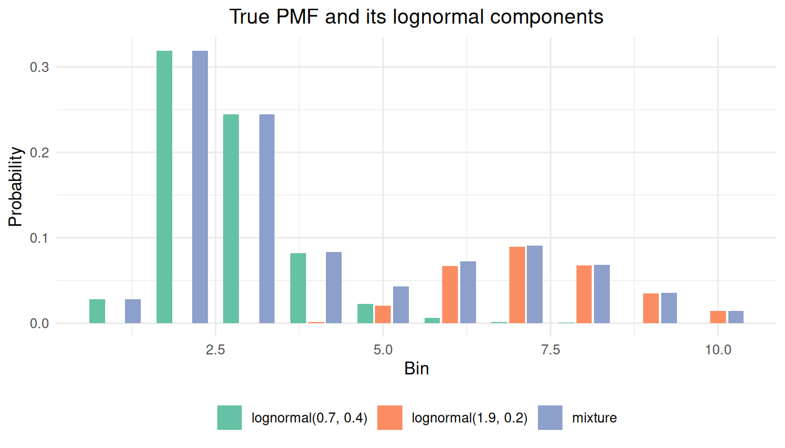
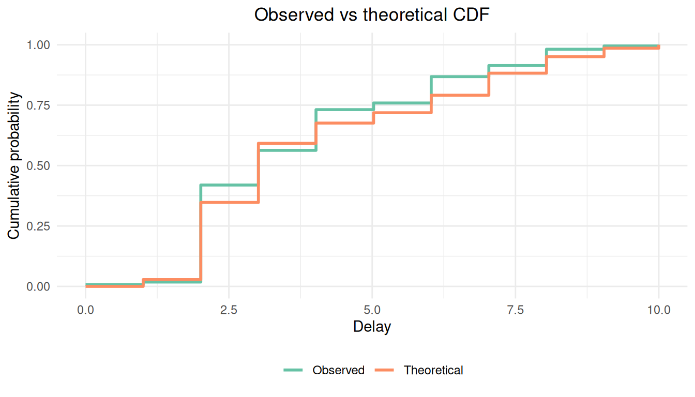
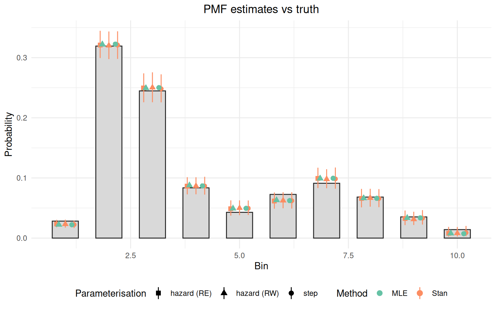

Fitting non-parametric delay distributions
Source:vignettes/fitting-nonparametric-delays.Rmd
fitting-nonparametric-delays.Rmd1 Introduction
1.1 What we will do
In this vignette we fit a non-parametric delay distribution to doubly censored data using primarycensored.
We discretise a mixture of two lognormals onto integer bins to obtain a bimodal PMF, then simulate from that distribution under primary and secondary censoring with right-truncation, fit it with MLE via fitdistdoublecens() and with Stan via the package model exposed by pcd_cmdstan_model(), then compare the four estimates against the truth.
By the end you should be able to recognise when a non-parametric fit is appropriate and reproduce the workflow on your own data.
1.2 What you might want to read first
This vignette assumes familiarity with vignette("fitting-dists-with-fitdistrplus") and vignette("fitting-dists-with-stan").
Mathematical derivations of the censored convolution are in vignette("why-it-works") and vignette("analytic-solutions").
1.3 Packages used in this vignette
Alongside primarycensored we use cmdstanr for Stan fitting, ggplot2 for plotting, and dplyr for data manipulation.
MLE fitting goes through fitdistdoublecens() (which calls fitdistrplus).
2 Mathematical background
The non-parametric delay is supported on a fixed grid of \(K\) bins with boundaries \(b_0 < b_1 < \dots < b_K\).
At the distribution level (the R d/p/r functions and the corresponding Stan helpers) there is one piecewise-constant CDF and two ways to write down the same step PMF.
pdiscretehazard() is a deterministic wrapper around pdiscretestep(): it converts hazards to a PMF via hazards_to_pmf() and then delegates.
The two parameterisations earn their keep at the fitting stage, where they impose different regularisation on the PMF: the simplex on the PMF treats the bins as exchangeable up to a prior, the logit-hazard random walk assumes neighbouring hazards are related, and the logit-hazard random effect assumes the hazards are exchangeable around a common mean.
2.1 Discrete step (direct PMF)
We place a probability \(f_i\) on each bin and require \(\sum_{i=1}^{K} f_i = 1\) with \(f_i \geq 0\).
The CDF is the cumulative sum
\[
F(t) = \sum_{i: b_i \leq t} f_i, \qquad t \in [b_0, b_K].
\]
Under right truncation at \(D\) and a censoring window \([d, d_\text{upper}]\) the censored likelihood contribution for one observation is
\[
\frac{F_\text{obs}(d_\text{upper}) - F_\text{obs}(d)}{F_\text{obs}(D)},
\]
where \(F_\text{obs}\) is the convolution of \(F\) with the primary event density (see vignette("why-it-works") and vignette("analytic-solutions") for derivations).
The natural prior is a Dirichlet on the simplex, \(f \sim \text{Dirichlet}(\alpha)\).
2.2 Discrete hazard — logit random walk
We instead model the discrete-time hazard \(h_i = \Pr(T \in [b_{i-1}, b_i) \mid T \geq b_{i-1})\) on the logit scale via a Gaussian random walk. With innovations \(\varepsilon_j \sim \mathcal{N}(0, 1)\), \[ \text{logit}(h_i) = \alpha + \sigma \sum_{j=1}^{i-1} \varepsilon_j, \qquad i = 1, \dots, K-1, \] and \(h_K = 1\) to make the PMF proper. The PMF is recovered by \[ f_i = h_i \prod_{j < i} (1 - h_j). \] The random walk regularises towards smooth hazards: adjacent bins are tied together through the cumulative sum.
2.3 Discrete hazard — logit random effect
The random-effect variant keeps the same logit-hazard transform but drops the cumulative sum, treating the innovations as independent draws around the intercept. With \(\varepsilon_i \sim \mathcal{N}(0, 1)\), \[ \text{logit}(h_i) = \alpha + \sigma\, \varepsilon_i, \qquad i = 1, \dots, K-1, \] and \(h_K = 1\) again pins the final bin. The PMF is recovered with the same product as the random walk. This parameterisation assumes the hazards are exchangeable: it does not borrow strength between neighbouring bins, only towards the common intercept.
3 Simulating censored data from a step distribution
We build a bimodal true PMF as a mixture of two discretised lognormals, one at days 2–3 and one at days 6–7.
The mixture has two components, lognormal(meanlog = 0.7, sdlog = 0.4) and lognormal(meanlog = 1.9, sdlog = 0.2), with mixing weights 0.7 and 0.3.
A shape like this (for example a primary infection peak followed by a secondary reporting bump) is awkward to capture with a single parametric family and is a natural use case for the discrete step distribution.
Here a parametric mixture of two lognormals would also work; this vignette shows the more general non-parametric approach.
set.seed(123)
K <- 10
boundaries <- 0:K
mode1 <- diff(plnorm(boundaries, meanlog = 0.7, sdlog = 0.4))
mode2 <- diff(plnorm(boundaries, meanlog = 1.9, sdlog = 0.2))
raw_pmf <- 0.7 * mode1 + 0.3 * mode2
true_pmf <- raw_pmf / sum(raw_pmf)Before simulating we plot the two component PMFs together with the resulting bimodal mixture, which makes the non-parametric motivation visible.
truth_components <- data.frame(
bin = rep(seq_len(K), 3),
pmf = c(
0.7 * mode1 / sum(raw_pmf),
0.3 * mode2 / sum(raw_pmf),
true_pmf
),
series = factor(
rep(
c(
"lognormal(0.7, 0.4)",
"lognormal(1.9, 0.2)",
"mixture"
),
each = K
),
levels = c(
"lognormal(0.7, 0.4)",
"lognormal(1.9, 0.2)",
"mixture"
)
)
)
ggplot(truth_components, aes(x = bin, y = pmf, fill = series)) +
geom_col(position = position_dodge(width = 0.8), width = 0.7) +
scale_fill_brewer(palette = "Set2") +
labs(
x = "Bin", y = "Probability", fill = NULL,
title = "True PMF and its lognormal components"
) +
theme_minimal() +
theme(
legend.position = "bottom",
plot.title = element_text(hjust = 0.5)
)
We now simulate n = 2000 doubly censored observations using rpcens().
We let the primary window, the secondary window, and the right-truncation point all vary across observations, mirroring the convention used in vignette("fitting-dists-with-stan").
A meaningful fraction of draws are right-truncated below the maximum support; the fits must therefore correctly account for per-observation truncation as well as for primary and secondary censoring.
With n = 2000 the trough between the two modes is much better identified than at n = 500; the recovered PMF is typically within 0.01 of the truth in every bin.
n <- 2000
pwindows <- sample(c(1, 2), n, replace = TRUE)
swindows <- sample(c(1, 2), n, replace = TRUE)
obs_times <- sample(c(8, 10, 11), n, replace = TRUE)
generate_sample <- function(pwindow, swindow, obs_time) {
rpcens(
1, rdiscretestep,
boundaries = boundaries, pmf = true_pmf,
pwindow = pwindow, swindow = swindow, D = obs_time
)
}
samples <- mapply(generate_sample, pwindows, swindows, obs_times)
delay_data <- data.frame(
delay = samples,
delay_upper = samples + swindows,
pwindow = pwindows,
D = obs_times
) |>
mutate(delay_upper = pmin(D, delay_upper))
head(delay_data)## delay delay_upper pwindow D
## 1 2 3 1 10
## 2 3 4 1 10
## 3 6 7 1 8
## 4 8 10 2 11
## 5 6 8 1 11
## 6 4 5 2 8We can compare the empirical CDF of the simulated data against the true step CDF.
empirical_cdf <- ecdf(samples)
x_seq <- seq(0, K, length.out = 200)
theoretical_cdf <- pdiscretestep(
x_seq,
boundaries = boundaries, pmf = true_pmf
)
cdf_data <- data.frame(
x = rep(x_seq, 2),
probability = c(empirical_cdf(x_seq), theoretical_cdf),
type = rep(c("Observed", "Theoretical"), each = length(x_seq)),
stringsAsFactors = FALSE
)
ggplot(cdf_data, aes(x = x, y = probability, colour = type)) +
geom_step(linewidth = 1) +
scale_colour_brewer(palette = "Set2") +
labs(
x = "Delay", y = "Cumulative probability",
colour = NULL,
title = "Observed vs theoretical CDF"
) +
theme_minimal() +
theme(
plot.title = element_text(hjust = 0.5),
legend.position = "bottom"
) +
coord_cartesian(xlim = c(0, K))
The observed CDF is shifted left relative to the truth because right truncation and primary censoring suppress long delays in the raw data. Our goal is to recover the true PMF from these observed values.
4 Fitting via fitdistdoublecens()
fitdistdoublecens() accepts two non-parametric options: distr = "discretestep" and distr = "discretehazard".
For the hazard family the variant is picked via hazard_model = "rw" (default) or hazard_model = "re".
We start with the hazard parameterisation because, in our experience, it is more robust at the optimisation stage and faster to converge; we then show the direct PMF fit and discuss why it sometimes complains.
4.1 Discrete hazard — random walk
We use discretehazard_start() to build the named list of start values for the logit intercept, the log scale, and the K - 1 innovations.
haz_rw_start <- discretehazard_start(K)
fit_haz_rw <- fitdistdoublecens(
delay_data,
distr = "discretehazard",
start = haz_rw_start,
left = "delay",
right = "delay_upper",
pwindow = "pwindow",
D = "D",
boundaries = boundaries,
control = list(maxit = 10000)
)
summary(fit_haz_rw)## Fitting of the distribution ' pcens_dist ' by maximum likelihood
## Parameters :
## estimate
## alpha -3.77534029
## log_sigma 0.89777961
## eps_1 1.24880015
## eps_2 0.09062178
## eps_3 -0.32715663
## eps_4 -0.16758153
## eps_5 0.20969094
## eps_6 0.45104368
## eps_7 0.22592173
## eps_8 0.39383697
## eps_9 0.03944995
## Loglikelihood: -3017.353 AIC: 6056.707 BIC: 6118.3174.2 Discrete hazard — random effect
The RE variant uses the same data; we just switch hazard_model = "re".
Because the eps-zero start makes the RE likelihood flat in log_sigma (every bin equals the intercept), we offset the innovations from zero and start log_sigma away from the boundary.
On this bimodal dataset the RE optimisation is fragile: with bins where the implied hazard is close to 0 or 1 the logit transform pushes the Hessian near singular, and fitdistrplus can return error code 10.
We wrap the call in tryCatch() so the rest of the vignette still renders, and report the MLE estimate only when it converges.
The Stan RE fit is unaffected by this and is shown below.
haz_re_start <- discretehazard_start(
K,
log_sigma = log(0.5),
eps = 0.1 * seq_len(K - 1L)
)
fit_haz_re <- tryCatch(
fitdistdoublecens(
delay_data,
distr = "discretehazard",
hazard_model = "re",
start = haz_re_start,
left = "delay",
right = "delay_upper",
pwindow = "pwindow",
D = "D",
boundaries = boundaries,
calcvcov = FALSE,
control = list(maxit = 50000)
),
error = function(e) {
message("RE MLE did not converge: ", conditionMessage(e))
NULL
}
)4.3 Discrete step fit
step_start <- as.list(setNames(
rep(1 / K, K - 1L), paste0("p", seq_len(K - 1L))
))
fit_step <- fitdistdoublecens(
delay_data,
distr = "discretestep",
start = step_start,
left = "delay",
right = "delay_upper",
pwindow = "pwindow",
D = "D",
boundaries = boundaries
)
summary(fit_step)## Fitting of the distribution ' pcens_dist ' by maximum likelihood
## Parameters :
## estimate Std. Error
## p1 0.02219180 0.024066267
## p2 0.32257132 0.005986066
## p3 0.25013544 0.007226111
## p4 0.08684064 0.011973294
## p5 0.04943221 0.019170794
## p6 0.06230357 0.016766653
## p7 0.09944817 0.014053204
## p8 0.06605215 0.016110854
## p9 0.03365988 0.027895739
## Loglikelihood: -3014.707 AIC: 6047.415 BIC: 6097.823
## Correlation matrix:
## p1 p2 p3 p4 p5 p6
## p1 1.0000000 -0.110558066 0.35779528 0.46440510 0.61222868 0.571359346
## p2 -0.1105581 1.000000000 -0.38029944 0.09870361 0.02024906 0.031494293
## p3 0.3577953 -0.380299444 1.00000000 0.05714512 0.30550157 0.258719054
## p4 0.4644051 0.098703610 0.05714512 1.00000000 0.13481169 0.428717127
## p5 0.6122287 0.020249057 0.30550157 0.13481169 1.00000000 0.354824352
## p6 0.5713593 0.031494293 0.25871905 0.42871713 0.35482435 1.000000000
## p7 0.4097702 0.019995115 0.19097946 0.24513982 0.37349790 0.003925864
## p8 0.1661749 0.008566359 0.07648942 0.11041788 0.13044866 0.212240174
## p9 0.5068654 0.025547755 0.23452525 0.32281811 0.42458527 0.379845003
## p7 p8 p9
## p1 0.409770234 0.166174865 0.50686544
## p2 0.019995115 0.008566359 0.02554776
## p3 0.190979459 0.076489425 0.23452525
## p4 0.245139819 0.110417883 0.32281811
## p5 0.373497895 0.130448665 0.42458527
## p6 0.003925864 0.212240174 0.37984500
## p7 1.000000000 -0.109042079 0.32092270
## p8 -0.109042079 1.000000000 -0.18807167
## p9 0.320922699 -0.188071666 1.00000000The direct PMF fit often emits a cov2cor warning at the summary() step.
This comes from fitdistrplus taking a square root of negative or zero diagonal entries of the variance–covariance matrix.
With this much primary censoring and right truncation the last few bins (whose probability mass is small and partially smeared by truncation) sit close to the boundary of the simplex, so the Hessian is near singular.
The point estimates remain usable, but standard errors for those bins are not trustworthy.
The hazard fit avoids this because it parameterises the simplex through unconstrained logit-hazards.
5 Fitting via Stan
The package model returned by pcd_cmdstan_model() fits the non-parametric families directly.
dist_id = 26 selects the Dirichlet prior on the PMF, dist_id = 27 the logit-hazard random walk and dist_id = 28 the logit-hazard random effect.
The bin boundaries are carried as data through dist_options and the simplex or hazard transform is constructed inside the Stan model.
We use the same model object for all three fits below; only the dist_id and priors arguments to pcd_as_stan_data() change.
We aggregate to unique (pwindow, D, delay, delay_upper) rows for efficiency.
delay_counts <- delay_data |>
summarise(
n = n(),
.by = c(pwindow, D, delay, delay_upper)
) |>
rename(relative_obs_time = D)
np_model <- pcd_cmdstan_model()Priors flow through the regular priors argument, with semantics that depend on dist_id: for dist_id = 26 the length-K priors$scale is the Dirichlet concentration; for dist_id = 27 and 28 the length-2 priors$location and priors$scale give the mean and standard deviation for alpha and log_sigma respectively.
We define a small helper to keep the three setups DRY.
empty_bounds <- list(lower = numeric(0), upper = numeric(0))
np_stan_data <- function(dist_id, priors) {
pcd_as_stan_data(
delay_counts,
dist_id = dist_id, primary_id = 1,
param_bounds = empty_bounds,
primary_param_bounds = empty_bounds,
priors = priors,
primary_priors = list(location = numeric(0), scale = numeric(0)),
dist_options = list(K = K, boundaries = boundaries)
)
}
np_sample <- function(stan_data, seed) {
np_model$sample(
data = stan_data, seed = seed,
chains = 4, parallel_chains = 4,
iter_warmup = 500, iter_sampling = 500,
refresh = ifelse(interactive(), 50, 0),
show_messages = interactive()
)
}
hazard_priors <- list(location = c(0, 0), scale = c(5, 1))5.1 Logit-hazard random walk
dist_id = 27 selects the random-walk hazard parameterisation.
The final bin hazard is pinned to 1 inside the model so the PMF sums to 1.
rw_data <- np_stan_data(dist_id = 27, priors = hazard_priors)
rw_fit <- np_sample(rw_data, seed = 1)
rw_fit$summary(variables = paste0("np_weights[", seq_len(K), "]"))## # A tibble: 10 × 10
## variable mean median sd mad q5 q95 rhat ess_bulk ess_tail
## <chr> <dbl> <dbl> <dbl> <dbl> <dbl> <dbl> <dbl> <dbl> <dbl>
## 1 np_weig… 0.0235 0.0233 0.00391 0.00375 0.0175 0.0306 1.00 1552. 1006.
## 2 np_weig… 0.328 0.328 0.0142 0.0139 0.305 0.351 1.00 2068. 1611.
## 3 np_weig… 0.382 0.382 0.0184 0.0174 0.352 0.413 1.00 1878. 1296.
## 4 np_weig… 0.213 0.213 0.0199 0.0198 0.181 0.246 0.999 1604. 1711.
## 5 np_weig… 0.157 0.156 0.0223 0.0220 0.121 0.194 1.00 1417. 1559.
## 6 np_weig… 0.233 0.233 0.0287 0.0278 0.185 0.282 1.00 1958. 1813.
## 7 np_weig… 0.477 0.477 0.0395 0.0399 0.413 0.541 1.00 2071. 1818.
## 8 np_weig… 0.620 0.623 0.0632 0.0631 0.513 0.719 1.00 2155. 1810.
## 9 np_weig… 0.783 0.794 0.0971 0.0972 0.606 0.927 1.00 2432. 1392.
## 10 np_weig… 1 1 0 0 1 1 NA NA NA5.2 Logit-hazard random effect
dist_id = 28 selects the IID random-effect hazard parameterisation; the priors are passed through the same priors slot as dist_id = 27.
re_data <- np_stan_data(dist_id = 28, priors = hazard_priors)
re_fit <- np_sample(re_data, seed = 2)
re_fit$summary(variables = paste0("np_weights[", seq_len(K), "]"))## # A tibble: 10 × 10
## variable mean median sd mad q5 q95 rhat ess_bulk ess_tail
## <chr> <dbl> <dbl> <dbl> <dbl> <dbl> <dbl> <dbl> <dbl> <dbl>
## 1 np_weig… 0.0237 0.0235 0.00372 0.00352 0.0179 0.0303 1.00 1149. 1034.
## 2 np_weig… 0.329 0.329 0.0138 0.0137 0.307 0.353 1.00 1844. 1499.
## 3 np_weig… 0.381 0.381 0.0185 0.0192 0.350 0.411 1.00 2201. 1702.
## 4 np_weig… 0.213 0.213 0.0200 0.0206 0.181 0.246 1.00 2319. 1870.
## 5 np_weig… 0.154 0.153 0.0225 0.0226 0.119 0.193 1.000 2309. 1429.
## 6 np_weig… 0.231 0.230 0.0301 0.0297 0.183 0.281 1.00 2336. 1442.
## 7 np_weig… 0.479 0.479 0.0389 0.0396 0.414 0.544 1.00 2280. 1699.
## 8 np_weig… 0.611 0.612 0.0662 0.0694 0.500 0.716 1.00 2169. 1287.
## 9 np_weig… 0.787 0.807 0.107 0.108 0.593 0.937 1.00 1688. 1303.
## 10 np_weig… 1 1 0 0 1 1 NA NA NA5.3 Dirichlet prior on the PMF
dist_id = 26 selects the Dirichlet prior on the PMF.
The length-K priors$scale is the Dirichlet concentration; below we pass rep(1, K) to get a uniform prior over the simplex.
dirichlet_data <- np_stan_data(
dist_id = 26,
priors = list(location = numeric(0), scale = rep(1, K))
)
dirichlet_fit <- np_sample(dirichlet_data, seed = 3)
dirichlet_fit$summary(variables = paste0("np_pmf[", seq_len(K), "]"))## # A tibble: 10 × 10
## variable mean median sd mad q5 q95 rhat ess_bulk
## <chr> <dbl> <dbl> <dbl> <dbl> <dbl> <dbl> <dbl> <dbl>
## 1 np_pmf[1] 0.0226 0.0225 0.00373 0.00375 0.0168 0.0289 1.00 1518.
## 2 np_pmf[2] 0.321 0.321 0.0141 0.0147 0.298 0.344 1.00 3036.
## 3 np_pmf[3] 0.249 0.248 0.0140 0.0141 0.226 0.272 1.00 3476.
## 4 np_pmf[4] 0.0867 0.0865 0.00894 0.00855 0.0723 0.102 1.00 2208.
## 5 np_pmf[5] 0.0498 0.0494 0.00748 0.00738 0.0383 0.0625 1.00 1464.
## 6 np_pmf[6] 0.0623 0.0621 0.00851 0.00880 0.0491 0.0762 1.00 1945.
## 7 np_pmf[7] 0.0991 0.0984 0.0105 0.0105 0.0821 0.117 1.00 2088.
## 8 np_pmf[8] 0.0662 0.0658 0.00917 0.00920 0.0514 0.0815 1.00 2003.
## 9 np_pmf[9] 0.0338 0.0332 0.00730 0.00750 0.0225 0.0465 1.00 2266.
## 10 np_pmf[10] 0.00996 0.00900 0.00536 0.00496 0.00309 0.0202 1.00 1689.
## # ℹ 1 more variable: ess_tail <dbl>6 Comparing estimates against the truth
We extract the four sets of PMF estimates and plot them on a single panel.
We use shape to encode the parameterisation (step, hazard random walk, hazard random effect) and colour to encode the method (MLE vs Stan).
Stan estimates are shown with geom_pointrange (median plus 90% credible interval); MLE estimates are shown with geom_point.
We combine the three Stan fits and the three MLE fits into a single tidy data frame, with two small helpers that convert each fit to a per-bin PMF (point estimate for MLE, posterior median + 90% CI for Stan).
# MLE point PMF. `step` reads coefficients p1..p_{K-1} (last bin filled).
# Hazard variants read alpha/log_sigma/eps_1..eps_{K-1}, build the logit
# hazards (cumulative for RW, IID for RE), and apply hazards_to_pmf().
mle_pmf <- function(fit, K, type, model = "rw") {
if (type == "step") {
p <- coef(fit)[paste0("p", seq_len(K - 1))]
return(c(p, 1 - sum(p)))
}
alpha <- coef(fit)[["alpha"]]
sigma <- exp(coef(fit)[["log_sigma"]])
eps <- coef(fit)[paste0("eps_", seq_len(K - 1))]
delta <- if (model == "rw") cumsum(c(0, eps)) else c(0, eps)
h <- plogis(alpha + sigma * delta)
h[K] <- 1
hazards_to_pmf(h)
}
# Stan posterior PMF. `dist_id 26` reads np_pmf directly; `27` / `28`
# read np_weights (= hazards) and convert each draw via hazards_to_pmf().
stan_pmf_draws <- function(fit, K, dist_id) {
variable <- if (dist_id == 26) "np_pmf" else "np_weights"
d <- fit$draws(
variables = paste0(variable, "[", seq_len(K), "]"),
format = "matrix"
)
if (dist_id != 26) {
d <- t(apply(d, 1, function(h) {
h[K] <- 1
hazards_to_pmf(h)
}))
}
d
}
mle_fits <- list(
list(fit = fit_step, type = "step", label = "step"),
list(fit = fit_haz_rw, type = "hazard", label = "hazard (RW)", model = "rw")
)
if (!is.null(fit_haz_re)) {
mle_fits <- c(mle_fits, list(
list(fit = fit_haz_re, type = "hazard", label = "hazard (RE)", model = "re")
))
}
stan_fits <- list(
list(fit = dirichlet_fit, dist_id = 26, label = "step"),
list(fit = rw_fit, dist_id = 27, label = "hazard (RW)"),
list(fit = re_fit, dist_id = 28, label = "hazard (RE)")
)
mle_df <- do.call(rbind, lapply(mle_fits, function(x) {
model <- if (is.null(x$model)) "rw" else x$model
data.frame(
bin = seq_len(K),
pmf = mle_pmf(x$fit, K, x$type, model = model),
param = x$label, method = "MLE", row.names = NULL,
stringsAsFactors = FALSE
)
}))
stan_df <- do.call(rbind, lapply(stan_fits, function(x) {
d <- stan_pmf_draws(x$fit, K, x$dist_id)
data.frame(
bin = seq_len(K),
median = apply(d, 2, median),
lo90 = apply(d, 2, quantile, 0.05),
hi90 = apply(d, 2, quantile, 0.95),
param = x$label, method = "Stan", row.names = NULL,
stringsAsFactors = FALSE
)
}))
truth_df <- data.frame(bin = seq_len(K), pmf = true_pmf)
dodge <- position_dodge(width = 0.6)
ggplot() +
geom_col(
data = truth_df, aes(x = bin, y = pmf),
fill = "#D9D9D9", colour = "#252525", width = 0.6
) +
geom_pointrange(
data = stan_df,
aes(
x = bin, y = median, ymin = lo90, ymax = hi90,
colour = method, shape = param
),
position = dodge, size = 0.5
) +
geom_point(
data = mle_df,
aes(x = bin, y = pmf, colour = method, shape = param),
position = dodge, size = 2.5
) +
scale_colour_brewer(palette = "Set2") +
scale_shape_manual(
values = c(step = 16, `hazard (RW)` = 17, `hazard (RE)` = 15)
) +
labs(
x = "Bin", y = "Probability",
colour = "Method", shape = "Parameterisation",
title = "PMF estimates vs truth"
) +
theme_minimal() +
theme(
plot.title = element_text(hjust = 0.5),
legend.position = "bottom"
)
All three parameterisations recover the bimodal shape of the truth. The residual disagreement sits in the trough between the two modes (around bins 4–6): the right tail of the first mode and the left tail of the second mode collide there, and the convolution with the primary window smears mass from bins 2–3 into bin 4 and from bins 5–6 into bins 6–7. The inverse problem is therefore ill-conditioned around the trough: small differences in observed counts imply larger differences in the latent PMF, which is what the wider Stan posterior intervals in this region reflect. Narrower primary windows or fewer bins around the trough shrink the disagreement further.
7 When to choose each parameterisation
The random-walk hazard parameterisation is the default in most cases: it smooths the recovered PMF and is more robust at both the MLE and the Stan stage.
The random-effect variant is appropriate when you do not expect hazards at similar delay lengths to be related, but in our experience the random walk is usually a better starting point; your mileage may vary.
The Dirichlet on the PMF is the most flexible but can be poorly identified for bins where the censored convolution has little leverage, which is exactly where you saw the cov2cor warning.
In many applied settings a parametric distribution is a better fit than a non-parametric one, both because it has fewer parameters and because the smoothness it assumes matches what we know about biological delays.
For parametric alternatives see vignette("fitting-dists-with-fitdistrplus") and vignette("fitting-dists-with-stan").
For more flexible delay distribution fitting see the epidist package.
7.1 How you might adapt this vignette
- Adjust
Kandboundariesto match the temporal resolution of your data. - Pass a custom non-uniform
boundariesvector to capture daily, weekly, or irregular intervals. - Swap
delay_datafor your own doubly censored observations. - Change the Dirichlet concentration
alphato express stronger or weaker prior beliefs. - Adjust
sigma ~ normal(0, 1)to allow more or less smoothness in the logit-hazard trajectory. - Use any registered primary distribution (uniform or expgrowth here) by passing the matching
primary_idandprimary_params.